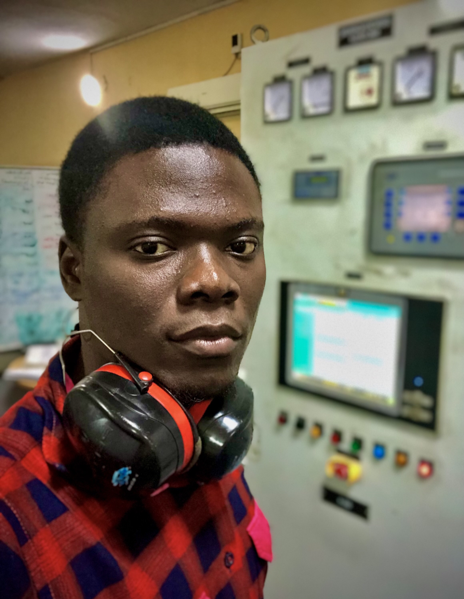

Oluwanisola Adedamola Daniel

Summary
Certified Frontend Developer with expertise in HTML, CSS, JavaScript, React, and Angular. I am eager to leverage my skills and collaborate in a dynamic environment to build intuitive, responsive, and scalable web applications while continuously expanding my knowledge in software engineering
Education
- Bachelor of Engineering, Electrical and Electronics Engineering - Federal University Oye Ekiti (2018-2024)
Work Experience
-
Dev Support - Tracehut
April 2023 - Present
-
Lend technical support to front-end development by simplifying the deployment process, hence reducing time spent resolving issues
-
Focus much with the developers to enhance the performance of the website for better engagement of the users
-
Assist in the maintenance and upgrade of software systems, ensuring minimal time is lost to system failure or downtime
-
Plant Operations Intern - Viathan Engineering Limted
April 2023 - Sept 2024
-
Key contributor to fault tracing and network isolation towards reduction of network downtime.
-
Carried out monitoring and control of the operation of the plant, implementing optimization measures that saw overall enhancement in plant performance.
-
Participated in routine maintenance and troubleshooting of equipment to reduce the rate of failure.
Skills
-
Frontend Technologies: HTML, CSS, JavaScript, React, Angular ⭐️⭐️⭐️⭐️
-
Version Control: Git, GitHub ⭐️⭐️⭐️
-
Responsive Design: Mobile-first design, Cross-browser compatibility ⭐️⭐️⭐️
-
Collaboration Tools: GitHub, Slack, Trello ⭐️⭐️
-
UI/UX Familiarity: Responsive web design, basic UI/UX principles ⭐️⭐️
Certification
-
Front-End Developer Certification Maxfront Technology Limited, 2023
Others